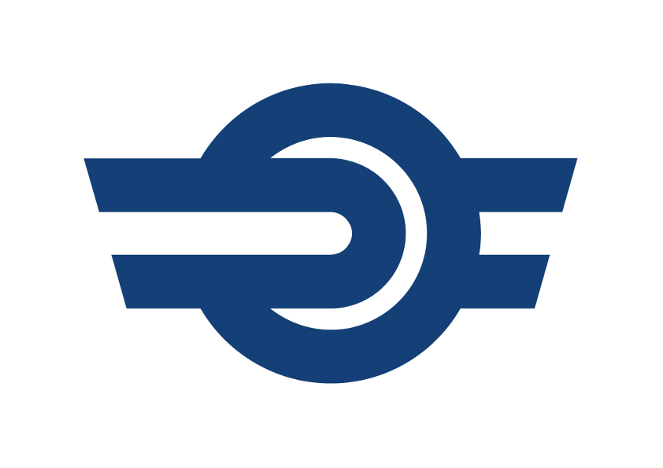

📱 Kérlek, fordítsd el a telefont fekvő módba a jobb láthatóságért!
Feladat:
-
Hibák:
Nincs hiba.
Hátralévő idő: 90 mp
Szeged
Kecskemét
Gyere, irányítsd a vonatokat!
1. vg.
2. vg.
3. vg.
4. váltó
2. váltó
4. váltó
2. váltó
1. vg.
2. vg.
3. vg.
Szeged → Kecskemét:
Jelzőállítás
Kecskemét → Szeged:
Jelzőállítás
Szeged 2- es váltó állítás
Szeged 4- es váltó állítás
Kecskemét 2-es váltó állítás
Kecskemét 4-es váltó állítás

MÁV PM Forgalomirányítás